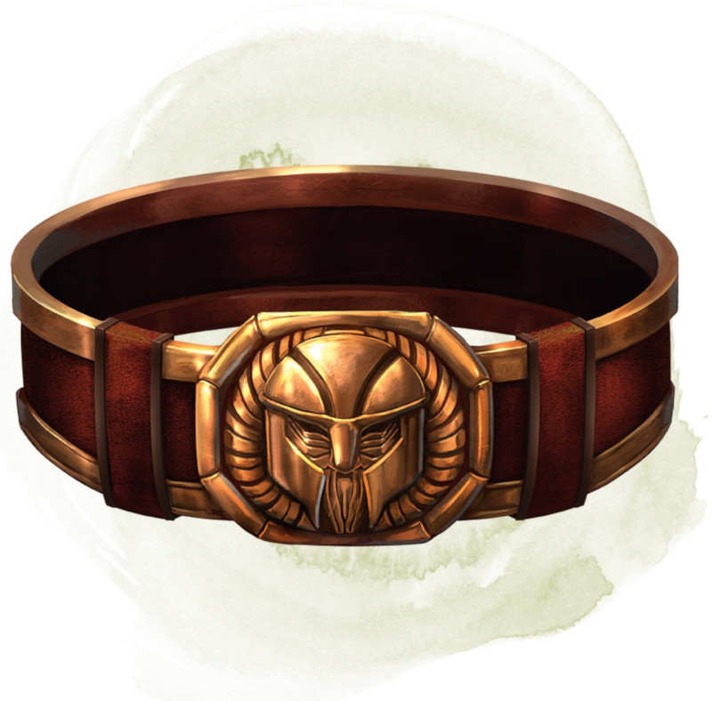

Ceinturon des nains
Objet merveilleux, rare (nécessite un lien)
Tant que vous êtes équipé de cette ceinture, vous gagnez les bénéfices suivants :
• Votre valeur de Constitution augmente de 2, pour un maximum de 20.
• Vous avez un avantage aux jets de Charisme (Persuasion) effectués lorsque vous interagissez avec des nains.
De plus, tant que vous êtes lié à la ceinture, vous avez 50 % de chance chaque jour à l'aube qu'une barbe vous pousse si vous êtes capable d'en avoir une, ou que votre barbe soit devenue visiblement plus épaisse si vous en avez déjà une.
Si vous n'êtes pas un nain, vous gagnez en plus les bénéfices suivants tant que vous portez ce ceinturon :
• Vous avez un avantage aux jets de sauvegarde contre les poisons, et vous avez la résistance contre les dégâts de poison.
• Vous obtenez la vision dans le noir à 18 mètres.
• Vous pouvez parler, lire, et écrire le nain.
• Votre valeur de Constitution augmente de 2, pour un maximum de 20.
• Vous avez un avantage aux jets de Charisme (Persuasion) effectués lorsque vous interagissez avec des nains.
De plus, tant que vous êtes lié à la ceinture, vous avez 50 % de chance chaque jour à l'aube qu'une barbe vous pousse si vous êtes capable d'en avoir une, ou que votre barbe soit devenue visiblement plus épaisse si vous en avez déjà une.
Si vous n'êtes pas un nain, vous gagnez en plus les bénéfices suivants tant que vous portez ce ceinturon :
• Vous avez un avantage aux jets de sauvegarde contre les poisons, et vous avez la résistance contre les dégâts de poison.
• Vous obtenez la vision dans le noir à 18 mètres.
• Vous pouvez parler, lire, et écrire le nain.
Dungeon Master´s Guide (SRD)
